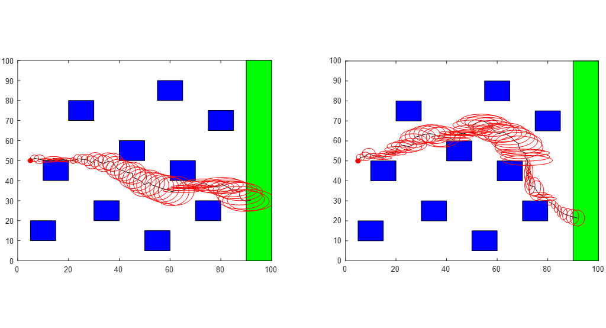

LeRobot Arm Hackathon NYC
SO-100 robot arm was built and calibrated. Mechanical and electrical noise were separated, and a filter was applied to the electrical noise to reduce robot trembling, and we were able to increase trajectory speed by 200%. All done in a 30-hour window, team won $1000 prize for “Most Innovative Use of Data.” Robot arm demonstrated functionality of picking up a pen and drawing autonomously, using camera vision as feedback.
Skills
- Action Chunking Transformer (ACT) Policy
- Data Filtering
- Machine Learning

Machine Learning Algorithm - Doosan H2515 Pick and Place
Trained ML model to identify cubes, returning pixel location and color class. Pixel coordinates converted into numerical inverse kinematic solution for arm navigation. Function then used in path planning algorithms, which was sent via client-server connection with TCP protocol for robot arm to execute.
Skills
- OpenCV
- YOLOv8
- DRL Programming Language
- Python
- Path Planning
- Pick and Place
Using Gradient to Compute Min. Norm Pseudoinverse Redundancy Resolution
Jacobian and gradient of path calculated and projected into null space to maintain orthogonality to the surface. Robot links and movement simulated in MATLAB with min. norm pseudoinverse redundancy resolution algorithm. Robot orthogonality to surface extremely applicable in welding, writing, or other scenarios which the end effector must maintain a specific angle to the surface.
Skills
- MATLAB
- Jacobian
- Resolved Rates

Control and Resolved Rates Simulations in MATLAB
Cost functions were implemented for link speed optimization. Inverse kinematics via the closed loop algorithm enabled the robot to adhere to speed constraints (1mm tolerance translational, 0.0524 radians rotational), results simulated in MATLAB via first order interpolation.
Skills
- Cost Functions
- Resolved Rates
- MATLAB

RRT and SLAM Implementation for 2D Mobile Robot with Obstacle Avoidance
RRT grows tree until goal condition reached, then parent nodes tracked back to origin to reveal the path. SLAM and Kalman filtering was used to calculate the uncertainty (red ellipses) at each time step. 100 instances were run, and different optimization parameters were analyzed for effectiveness. Shown is shortest path found (left) and min. uncertainty at goal region (right)
Skills
- RRT
- Kalman Filter
- SLAM
- MATLAB
- Path Planning
- Obstacle Avoidance

Doosan H2515 Robot Gripper - End Effector
Affordable end effector for robot needed to kickstart robotics research in the PROOF Lab. Gear and hinging mechanism was used to open and close jaws, with PWM signal from Arduino sent to motor controller to actuate the jaws. Arduino also controlled by digital IO on robot flange to allow jaw actuation to be toggled directly via the Doosan Programming Language.
Skills
- SolidWorks
- Mechatronics
- 3D Printing

SESMA 3.0 - Soft Exosuit for Patients with Spinal Muscular Atrophy
Device helps patients stand independently using cables routed down leg. 8 markers were placed to simulate cable path, and 3D splines were used to simulate a cable. Numerical techniques then used to discretize the data to calculate the change in length from cable during sit to stand transitions. This was implemented in parallel with PID compensation to monitor transitions for real-time feedback and autonomous activation when needed. Final Prototype was 3D printed and machined and delivered 10% knee torque assistance.
Skills
- CNC programming and machining
- PID compensation
- 3D splines

Hand Squeezing Device for Grip Strength Rehabilitation
Hand squeezer device with adjustable force. A four-bar linkage adjusts the tension of a band in the device controlled through a potentiometer. PIC16F88 microcontroller was used to control LCD display, read sensors, and control actuators, programmed and debugged in PICBasic Pro language.
Skills
- PICBasic Pro
- Mechatronics
- Fourbar Linkage